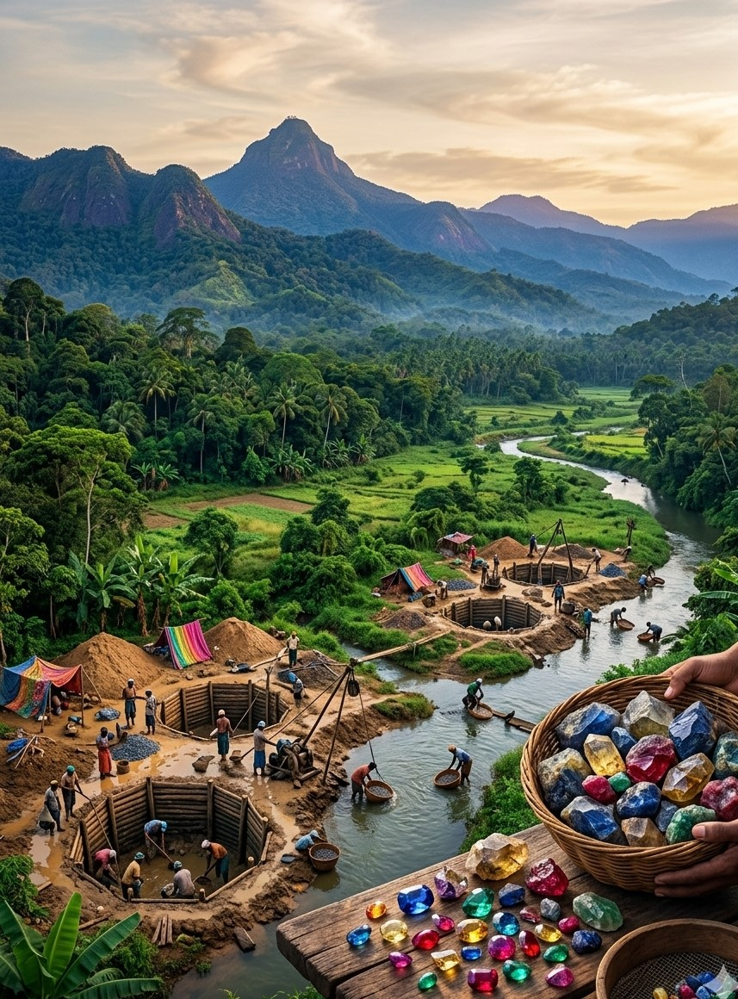

A Place Close to My Heart
Ratnapura is not just my hometown. It is a place filled with memories, nature and extraordinary beauty.

Where the Earth Meets Beauty
Ratnapura is located in the Sabaragamuwa Province of Sri Lanka and is internationally famous for its gemstone industry.
The city is surrounded by beautiful mountains, rivers, forests and green landscapes. Ratnapura is famous for tea cultivation too. The combination of natural beauty and the gemstone industry gives Ratnapura a unique identity.
Growing up around this environment has given me an appreciation for both nature and the traditions of my hometown. I would always recommend my hometown for anyone to spend a good vacation.